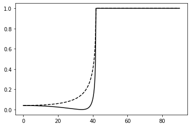
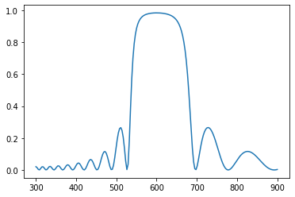
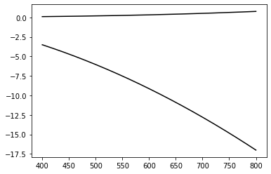

Multilayer
Matrix formulation of Fresnel coefficients for multilayers
import cmath
import matplotlib.pyplot as plt
import numpy as np
import scipy as sp
For a given incident angle and wavelength, we compute
- the wavevectors k_i in all media
- the in-plane wavevector k_x
- the k_z components in all media
From there we iterate over the number of interfaces and compute the matrix associated with each interface, and its product with the matrix from previous iterations.
The multi-interface complex reflection and transmission coefficients are obtained from the elements M_{11} and M_{21}
def multilayer(wavelength, theta, epsilon, thickness, polarisation):
Nlay = len(epsilon)
k0 = 2*np.pi/wavelength
n1 = cmath.sqrt(epsilon[0])
k1 = n1 * k0
k_x = k1 * cmath.sin(theta)
k = [cmath.sqrt(epsi)*k0 for epsi in epsilon]
kz = [cmath.sqrt(ki**2 - k_x**2) for ki in k]
## calculate the transition matrix M
M11 = M22 = 1.0 + 0j
M21 = M12 = 0.0 + 0j
Mi11 = Mi12 = Mi21 = Mi22 = 1 + 0j
# empty 2x2 complex matrix
M = np.zeros([2,2])+0j
M_tmp = np.zeros([2,2])+0j
for il in range(Nlay-1):
if polarisation == 'p':
Ki = (epsilon[il] / epsilon[il+1]) * (kz[il+1] / kz[il])
elif polarisation == 's':
Ki = kz[il+1] / kz[il]
phasei = np.exp(1j*thickness[il]*kz[il])
Mi11 = 0.5*(1+Ki) / phasei
Mi21 = 0.5*(1-Ki) * phasei
Mi12 = 0.5*(1-Ki) / phasei
Mi22 = 0.5*(1+Ki) * phasei
M_tmp[0,0] = 0.5*(1+Ki) / phasei
M_tmp[1,0] = 0.5*(1-Ki) * phasei
M_tmp[0,1] = 0.5*(1-Ki) / phasei
M_tmp[1,1] = 0.5*(1+Ki) * phasei
M = M * M_tmp
M11new = M11*Mi11 + M12*Mi21
M21new = M21*Mi11 + M22*Mi21
M12new = M11*Mi12 + M12*Mi22
M22new = M21*Mi12 + M22*Mi22
M11 = M11new
M12 = M12new
M21 = M21new
M22 = M22new
t = 1 / M11
r = M21 * t
R = abs(r)**2
T = 1 - R
return(R, T)
Boring example of a single interface
Check that we reproduce the results from single-interface Fresnel coefficients.
epsilon = (1.5**2, 1.5**2, 1.0**2)
thickness = (1e3, 50, 1e3)
polarisation = 'p'
theta = np.pi/4
wavelength=633.0
r, t = multilayer(wavelength, theta, epsilon, thickness, polarisation)
Ntheta = 360
atheta = np.linspace(0.001, np.pi/2-0.001, Ntheta)
arp = np.zeros(Ntheta)
ars = np.zeros(Ntheta)
atp = np.zeros(Ntheta)
ats = np.zeros(Ntheta)
for it in range(Ntheta):
theta = atheta[it]
rp, tp = multilayer(wavelength, theta, epsilon, thickness, 'p')
rs, ts = multilayer(wavelength, theta, epsilon, thickness, 's')
arp[it] = rp; ars[it] = rs; atp[it] = tp; ats[it] = ts;
atheta_deg = atheta * 180/np.pi
plt.figure()
plt.plot(atheta_deg, arp, '-k')
plt.plot(atheta_deg, ars,'--k')
plt.show()

Distributed Bragg Reflector
This is a multilayer where the optical thickness of each layer is \lambda/4, leading to constructive interference in the reflection coefficient around the central wavelength. We define a helper function to return arrays of epsilon and thickness for such structures.
def dbr(lambda0, n1, n2, N):
d1 = lambda0 / 4 / n1
d2 = lambda0 / 4 / n2
thickness = np.concatenate([[d1,d2] for _ in range(N)])
epsilon = np.concatenate([[n1**2,n2**2] for _ in range(N)])
return(epsilon, thickness)
Nlambda = 200
wavelength = np.linspace(300, 900, Nlambda)
ar1 = np.zeros(Nlambda)
s1 = dbr(600, 2.0,1.5, 10)
for it in range(Nlambda):
rp1, tp = multilayer(wavelength[it], 0.0, s1[0], s1[1], 'p')
ar1[it] = rp1
plt.figure()
plt.plot(wavelength, ar1)
plt.show()

Drude model for the dielectric function of metals
Our next structure adds a gold layer on top of the DBR; because gold is very dispersive in the visible (it is yellow, for one thing), we need a wavelength-dependent dielectric function, defined below.
# this is approximately like gold in the red-near-IR part of the spectrum
def drude(wavelength, omega_p, gamma_p, epsilon_inf):
omega = 2*np.pi*1e9 * 2.99792458e8 / wavelength
epsilon = epsilon_inf - omega_p**2 / (omega**2 + 1j * omega * gamma_p)
return(epsilon)
import math
import matplotlib.pyplot as plt
Nlambda = 200
wavelength = np.linspace(400, 800, Nlambda)
e = [drude(l, 1e16, 1e14, 1) for l in wavelength]
plt.figure()
plt.plot(wavelength, np.real(e), '-k')
plt.plot(wavelength, np.imag(e), '-k')
plt.show()

Tamm plasmon structure
Let's see what happens to the reflectivity of our DBR when we add a thin gold film on top. A mirror on top of a mirror, essentially. This structure supports optical modes called Tamm plasmons.
def tamm(lambda0, n1, n2, N, dm, epsm, nleft, nright):
s1 = dbr(lambda0, n1, n2, N)
epsilon = np.append(epsm, s1[0])
epsilon = np.append(nleft**2, epsilon)
epsilon = np.append(epsilon, nright**2)
thickness = np.append(dm, s1[1])
thickness = np.append(100, thickness)
return(epsilon, thickness)
We now compare the results for the bare DBR, and the DBR coated with gold.
Nlambda = 300
wavelength = np.linspace(300, 900, Nlambda)
ar1 = np.zeros(Nlambda)
ar2 = np.zeros(Nlambda)
ar3 = np.zeros(Nlambda)
s1 = dbr(600, 2.0,1.5, 10)
for it in range(Nlambda):
rp1, tp = multilayer(wavelength[it], 0.0, s1[0], s1[1], 'p')
epsm = drude(wavelength[it], 1e16, 1e14, 1)
s2 = tamm(600, 2.0, 1.5, 10, 40, epsm, 1.0, 1.5)
rp2, tp = multilayer(wavelength[it], 0.0, s2[0], s2[1], 'p')
# air/gold interface for reference
epsilon = (1.0**2, epsm, 1.5**2)
thickness = (1e3, 40, 1e3)
rp3, tp = multilayer(wavelength[it], 0.0, epsilon, thickness, 'p')
ar1[it] = rp1; ar2[it] = rp2;ar3[it] = rp3;
plt.figure()
plt.plot(wavelength, ar1, '--k')
plt.plot(wavelength, ar2, '-k')
plt.plot(wavelength, ar3, ':k')
plt.show()

Download this page as a Jupyter notebook or as a standalone Python script.